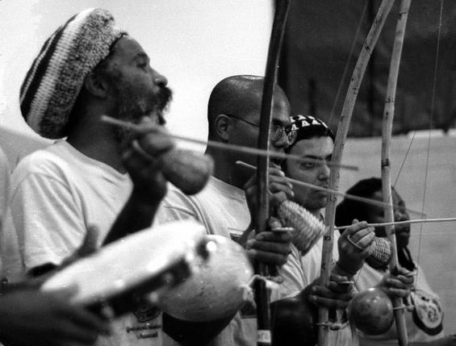

Capoeira |
|||
| Története | Működése | Típusai | Mit jelent számomra? |
TörténeteA capoeira a 15. századi Dél-Amerikában alakult ki, ahol önvédelmi
harcművészetként alkalmazták az Afrikából behurcolt rabszolgák. Mivel a
rabszolgák harcművészeti gyakorlása értelemszerűen tiltva volt,
valahogyan álcázni kellett ezt a sportot. Ezért is került bele a
zene, és a körben való játék, akarva ezzel a bent zajló, kívülről
táncnak tűnő harcot. Mestre BimbaAz 1899-ben, Manoel dos Reis Machado néven született Mestre Bimba
1932-ben megalapított első legális capoeira iskoláját, ahol az általa
egységesített Capoeira Regionalt kezdte oktatni. Mestre PastinhaMestre Pastinha, Vicente Ferreira Pastinha, 1941-ben alapította meg saját iskoláját, amely a későbbiekben a Capoeira Angola stílus alapjául szolgált.
Működése
A capoeirában mind edzéseken, mind rodákban nagyon fontos a csapat.
Mindig körben zajlik az edzés, ahol a roda "szájánál" (a hangszeren
játszó személyek mellett) lehet a rodába bejutni. Mindig 2 ember játszik
egymással, a zene ütemére, amit a hangszerek, a 3 ritmusú taps és a
kórus éneke kísér.
Rodáknak két fő típusa van, az egyik az edzéseken jellemző roda, ahol az edző szabja meg, hogy ki kivel játszik, valamint a 'jogo de compra', mikor a játékosok döntenek, hogy mikor mennek be játszani, ám ennek szigorú szabályrendszere az öveken alapszik.  TípusaiA capoeira alapvetően 2 fő ágazatra bomlik.
Capoeira Angola A capoeira lassabb, hagyományosabb ágazata. Ebben a stílusban nagyobb hangsúly kerül a zenére, a szép, szabályos játékra. Mivel a játék lassú, és a földhöz közel zajlik, nem az erő, hanem sokkal inkább az ész harca, célja a másik eszén túljárni. Capoeira Regional A capoeira gyorsabb stílusú ága, amelyben a játékosok magasabban, állva küzdenek, több látványos akrobatikát alkalmazva. A körben állók részéről hangsúlyosabb a taps, fenntartva ezzel az energiát, amire a játékosoknak szüksége van. Mit jelent számomra?
Miután már 5 éve capoeirazom, és igen mélyen az életem részét képezi,
nehéz volna tagadni, hogy szorosan kötődöm hozzá. Többek között emiatt
kezdtem el megtanulni portugálul.
Ami számomra a capoeriaban a legfontosabb, hogy nem egyedül csinálom, hanem mindig van velem valaki. Ez lehet egy csapattársam, lehet egy barátom, akiket látok fejlődni akár az előző edzés óta, és inspiráljuk egymást. Vagy lehet egy teljesen idegen, akár másik egyesületből származó diák, akivel egy izgalmas játékban lehet részem. Az egyik legjobb a capoeira mozdulatokban, hogy mindig lehet őket jobban és jobban csinálni. Mindig lehet újat és mást tanulni. És ebben a inspiráló környezetben a legjobb és a legkönnyebb szerintem fejlődni. Források:Wikipédia |
|||